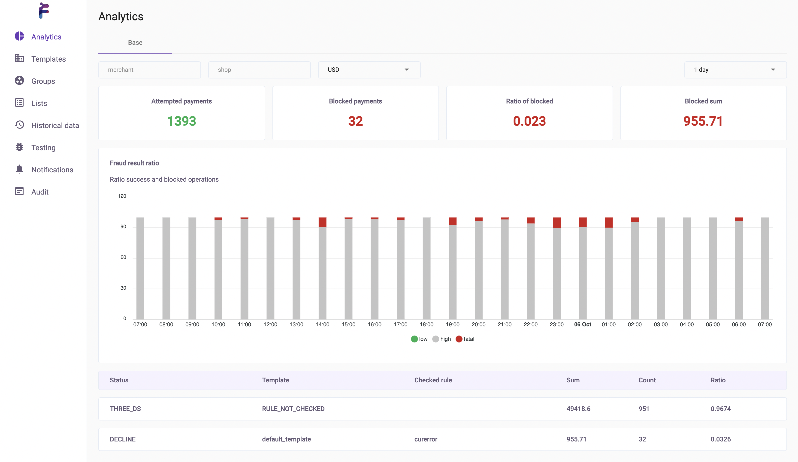
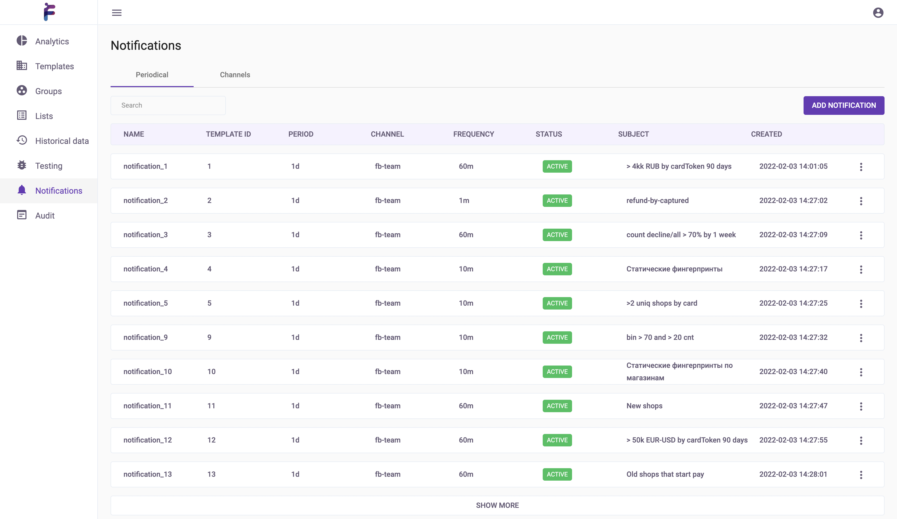
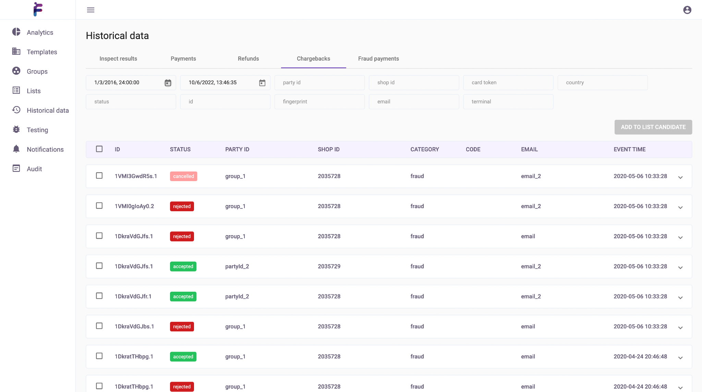

Аналитика
Для анализа транзакций в UI системы предоставлены все необходимые инструменты.
Графики для анализа статистики

Позволяет увидеть общую картину и определить отклонения в разрезе периодов времени. На таблице представлена разбивка по срабатыванию правил, что позволяет в реальном времени реагировать на те или иные изменения на живом трафике. Есть возможность наблюдать за конкретными магазинами и валютами.
Настройка нотификаций

Система предоставляет набор нотификаций, который можно направить на email. Для удобства можно менять периоды запросов и частоту отслеживания, настраивать различные каналы для нотификаций.
Исторический данные

Также под рукой есть поиск по всем историческим данным. Можно подгружать связанные операции такие как чарджбеки и рефанды. В истории видны срабатывающие правила. На базе исторических данных можно создать множество для тестирования.